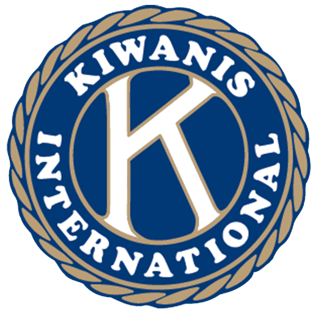
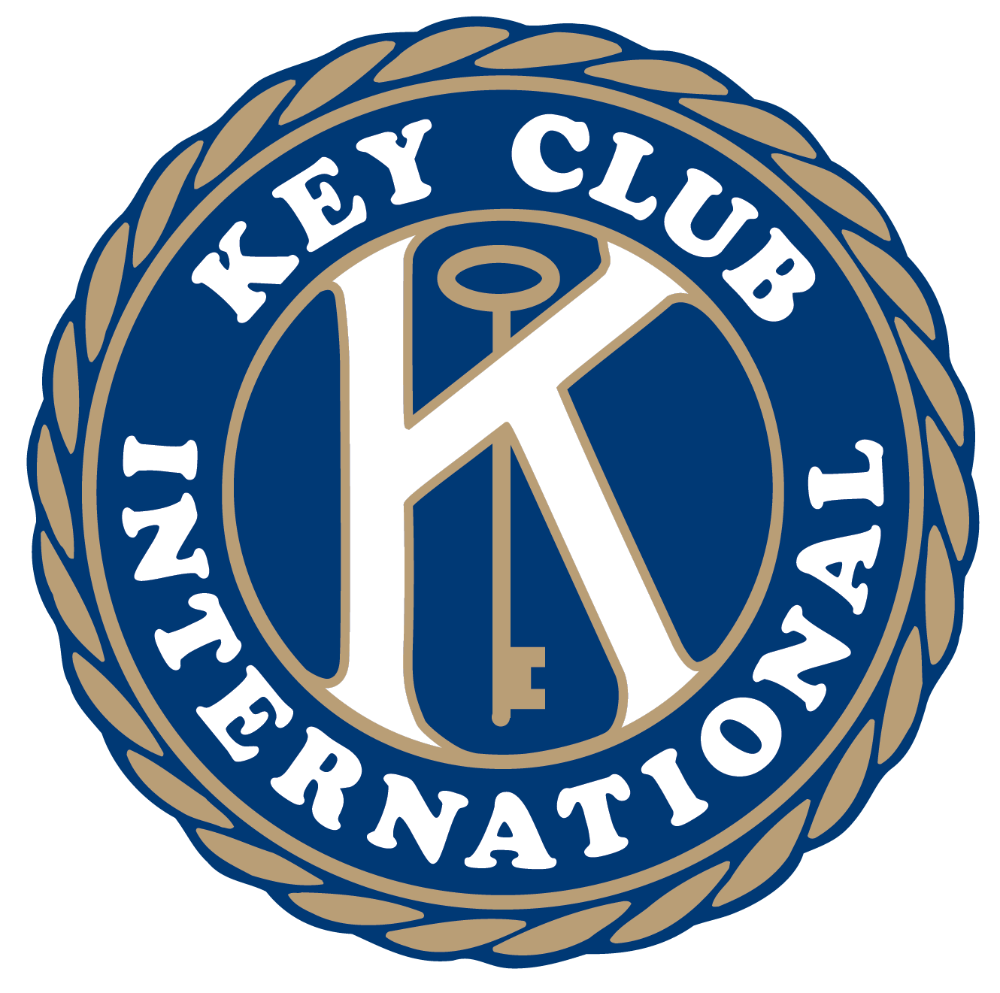
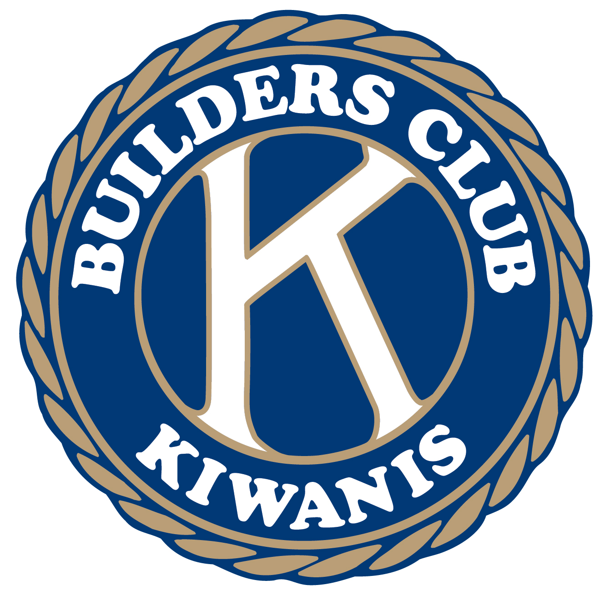
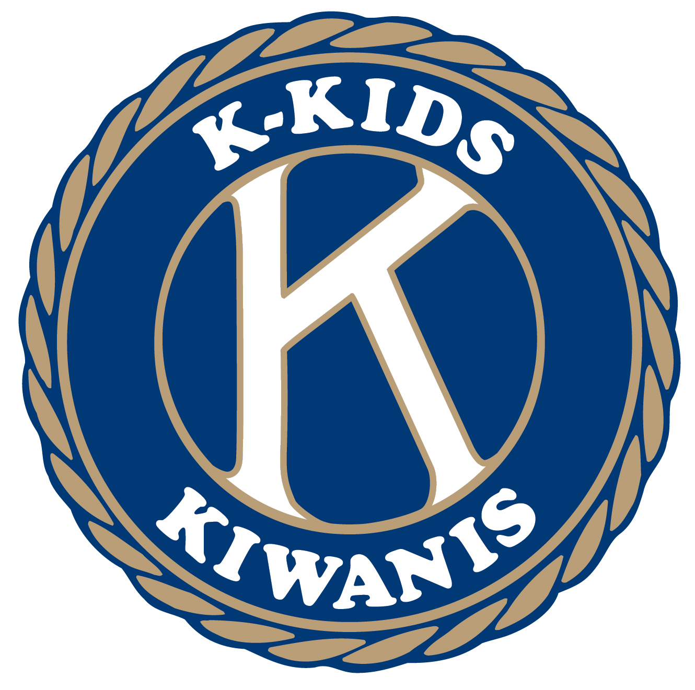
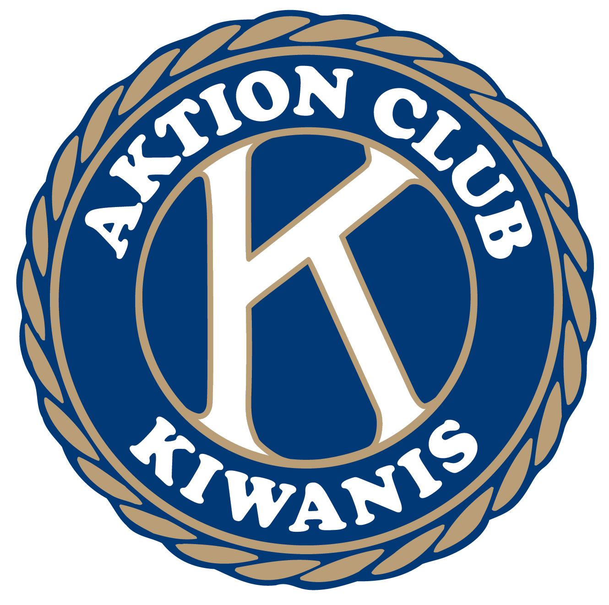

Circle K International Founded
Circle K International was established as the college and university branch of the Kiwanis family, giving college students the opportunity to serve their communities and develop as leaders.
The Missouri-Arkansas District of Circle K International — growing leaders and serving communities since 1957.
Missouri-Arkansas is a district of Circle K International — the premier collegiate and university community service, leadership development, and fellowship organization in the world.
The Missouri-Arkansas District is made up of 6 university clubs across two states. Our members represent the best of college volunteerism, leadership, and community impact.
We exist to give college students the opportunity to grow through service, leadership development, and fellowship — one club at a time.
Circle K International (CKI) is the premier collegiate and university community service, leadership development, and fellowship organization. Sponsored by Kiwanis International, CKI has clubs on hundreds of college campuses worldwide.
The Missouri-Arkansas District of Circle K International serves college students across Missouri and Arkansas. We are committed to developing leaders, serving communities, and building lasting fellowship.
Use the Club Directory to find a Circle K club at your university, and the Board page to meet your district officers.
To grow members, clubs, and communities through representation and service leadership.
To provide opportunities through character building and community outreach across Missouri and Arkansas — and beyond.
We dedicate ourselves to improving communities through meaningful volunteer work and hands-on projects that make a lasting difference.
We build lasting friendships and a sense of belonging through shared experiences, collaboration, and mutual support across our clubs and district.
We develop leaders who inspire positive change on campus and in the community through skill-building, mentorship, and leading by example.
From our founding roots to a growing network of university clubs across two states — here's how MO-ARK CKI got here.
Circle K International was established as the college and university branch of the Kiwanis family, giving college students the opportunity to serve their communities and develop as leaders.
The Missouri-Arkansas District of Circle K International was officially founded during the 1957–1958 administrative year. The first DCON was held in Springfield, MO.
Today, MO-ARK CKI spans 6 university clubs across Missouri and Arkansas, with elected district officers and dedicated members making a difference in their campus communities every day.
Circle K is one of six service leadership programs sponsored by Kiwanis International — a global family of clubs from elementary school through adulthood, all dedicated to serving the children of the world.

The global parent organization that founded and sponsors every program in the K-Family.
Visit kiwanis.org →
CKI is the premier collegiate service leadership organization — and where MO-ARK lives.
Visit circlek.org →
High school students serving home, school, and community through service leadership.
Visit keyclub.org →
Middle-school service club that builds character and leadership through community projects.
Visit buildersclub.org →
Elementary school students learning leadership and service through age-appropriate projects.
Visit kkids.org →
The only service club for adults living with disabilities — making a difference in their communities.
Visit aktionclub.org →